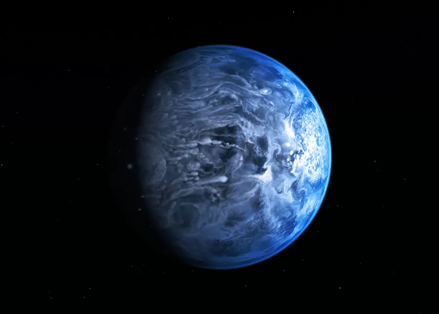

11. Juli 2013
HD 189733 b: erstmals die Farbe eines Exoplaneten gemessen
Mit dem Spektrografen STIS des Hubble-Weltraumteleskops wurde erstmals die Farbe eines Exoplaneten bestimmt. Die Forschenden beobachteten das System, bevor, während und nachdem HD 189733 b hinter seinem Stern verschwand. Dabei sank die Gesamthelligkeit nur im blauen Licht – der Planet reflektiert also vor allem Blau.
Die Farbe stammt nicht von einem Ozean: Vermutlich streuen Silikatteilchen in der dunstigen Atmosphäre das blaue Licht. Der 63 Lichtjahre entfernte Gasriese umkreist seinen Stern sehr eng. Seine Atmosphäre ist über 1000 Grad Celsius heiß, die Winde erreichen etwa 7000 Kilometer pro Stunde.
Quelle: ESA/Hubble: "Hubble spots azure blue planet", 11.07.2013